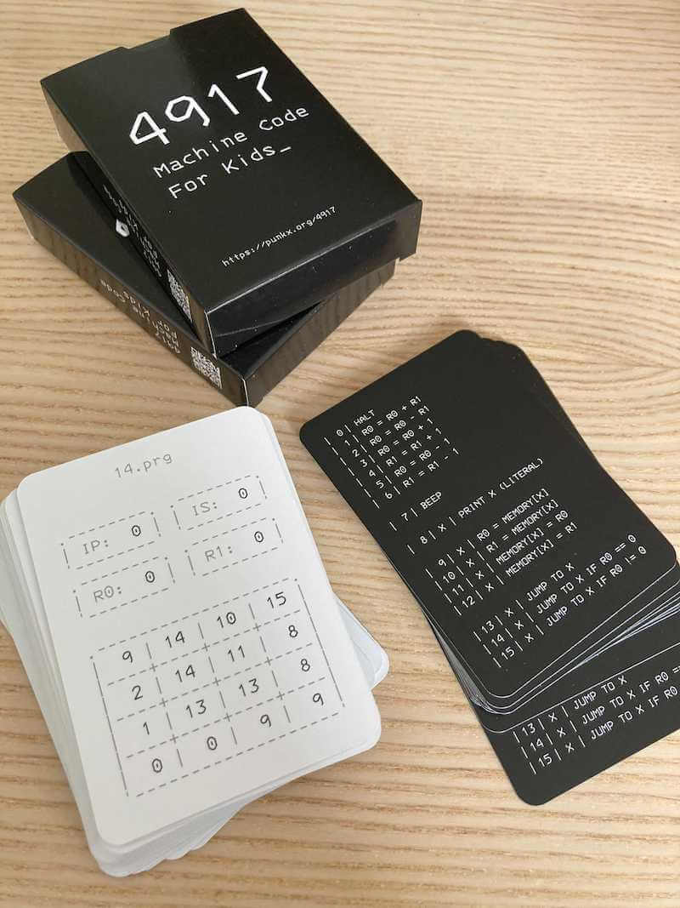
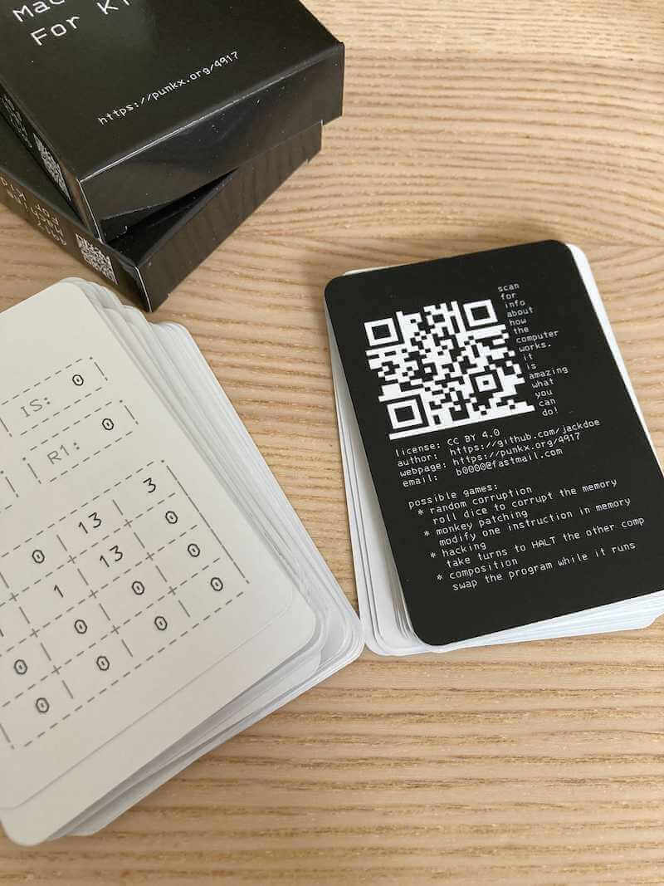
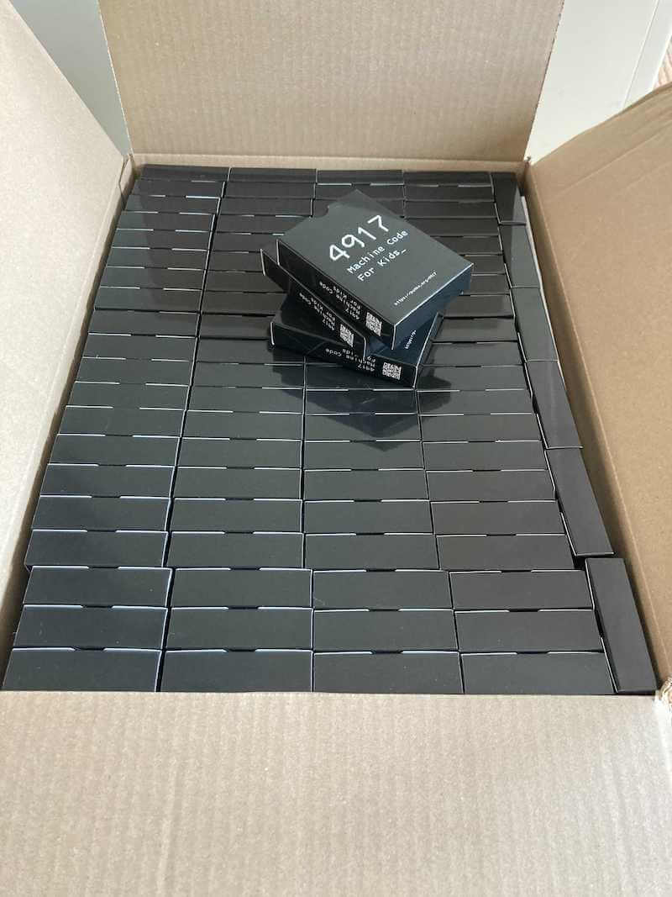

4917: Machine Code For Kids - The Card Game
This is a card game for teaching kids how to read and write machine code, using a simple 4 bit computer with very simple instruction set, 2 general purpose registers and only 16 cells of addressable memory. Just to manage your expectations, those are basically 54 tiny programs that I spent 2 months writing, in the guide there are examples how to play, but I mainly just walk through the code with my daughter during lunch or in the bus.
The cards have 54 small programs, illustrating various low level concepts such as:
- fetch execute cycle
- instruction arguments
- variables
- pointers
- self modifying programs
- self corrupting programs
- self referencing code
- integer overflows and underflows
- control flow and addressable memory
- code is data
- data ia code
- debugging



Buy now: €5,00 EUR
The game is based on Richard Buckland's 4 bit computer
Note: When you play with your kid, install x64dbg and show them the actual machine code of a program as it is being executed. Another thing that is really helpful is if you write a small C program that does somewhat the same thing as a specific card to illustrate it better.
Also check out the other game we made:
- programming time, which is a game to teach python and some more fundamental algorithms, from hash tables to RSA
- programming for kids, a log of my journey of teaching my daughter how to code
- The Unix Pipes Game, a game to teach kids to use basic UNIX commands:
cat, sort, grep, head, tail, wc, uniq
- The C Pointer Game - Pointers, Arrays and Strings, a game to teach kids to look at the computer memory and understand references and values
- PUNK0 - The Function Composition Card Game, use cards to manipulate a list and use its values to win the game
Example cards (6 out of 55):


Bugs:
- card 25: bug found by @mbkulik fixed in pull/32, the card was printing 0,12,10,8... instead of the desired 14,12,10.... The current printed version has the bug printed on card 25, but the digital card is fixed if you want to print the deck yourself.